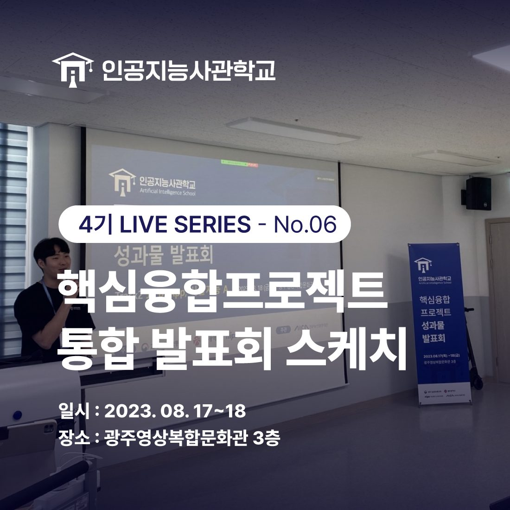
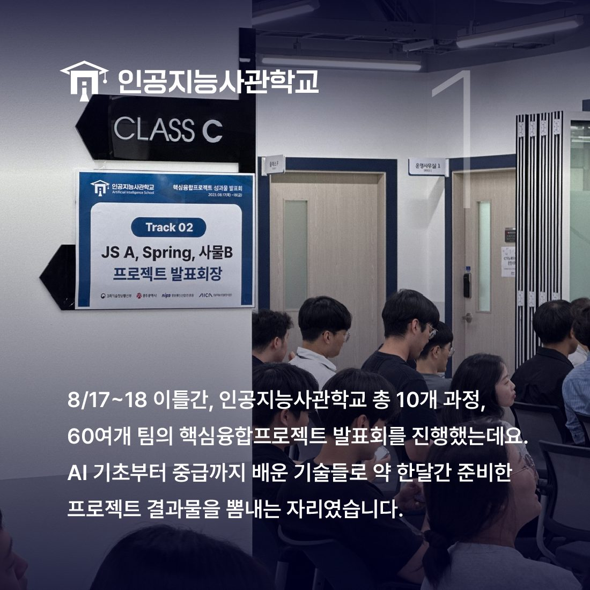
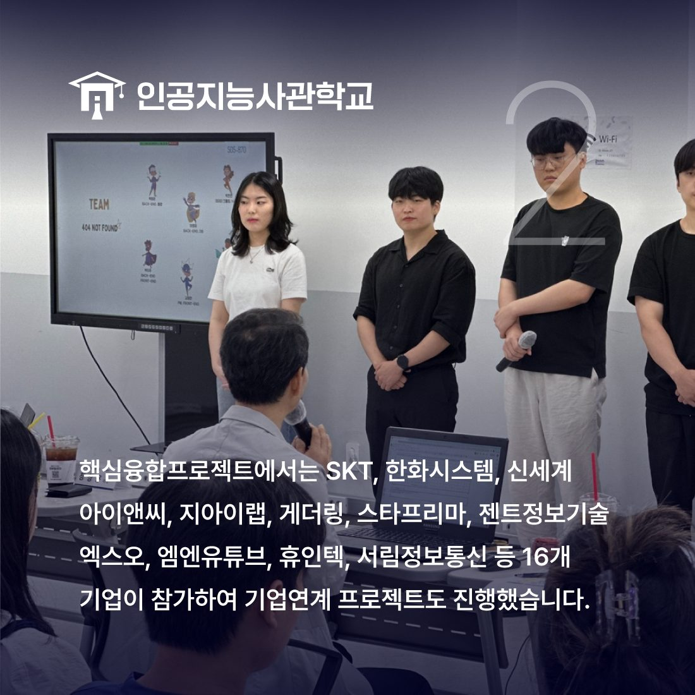
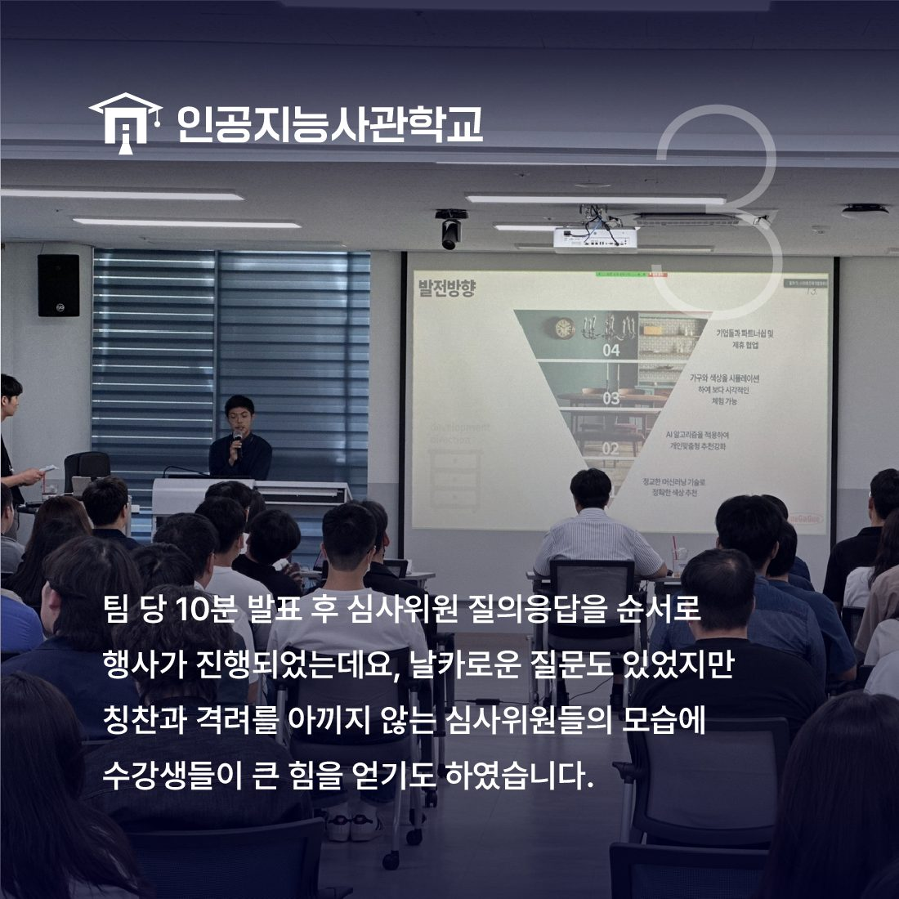
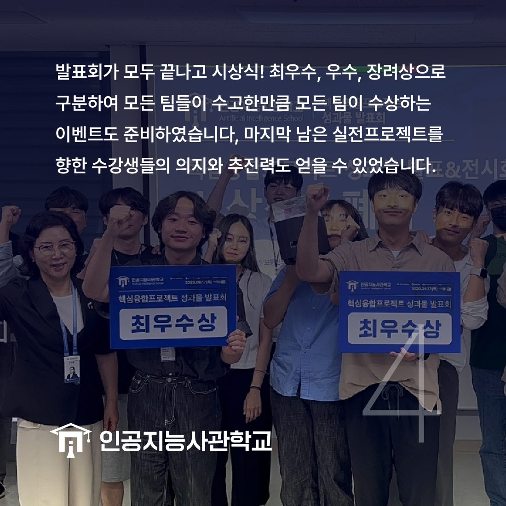
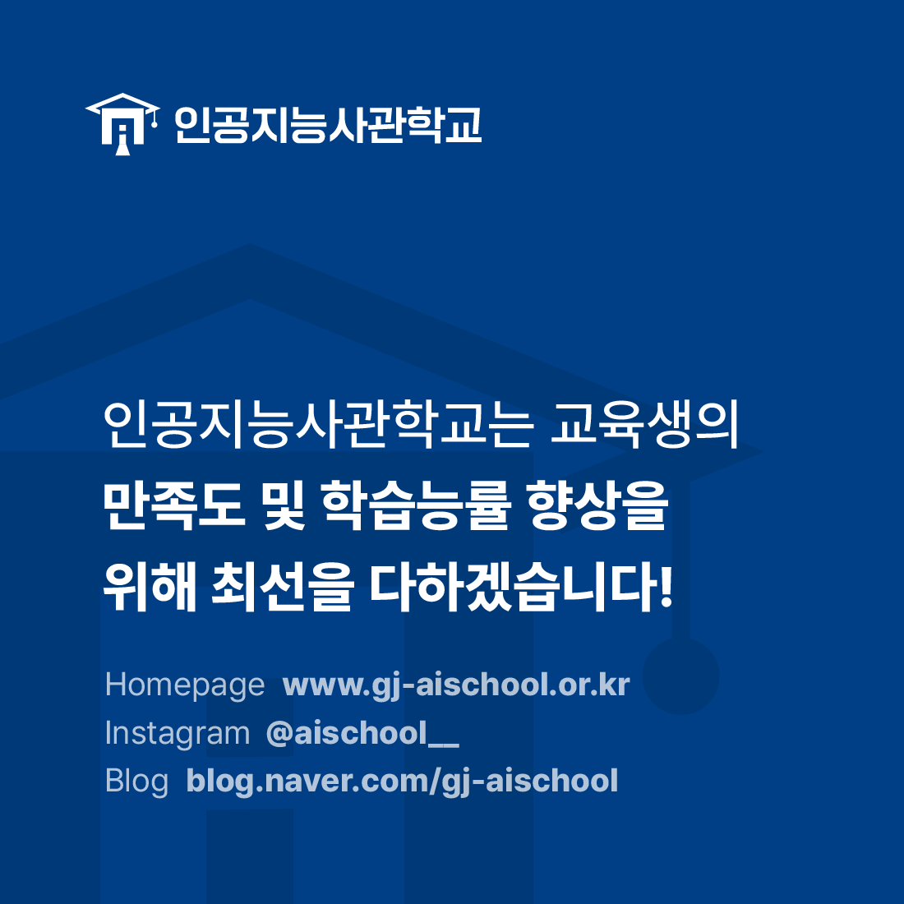

안녕하세요! 인공지능사관학교입니다. 😆

오늘은 지난 8월 17일부터 18일까지 진행한
핵심융합프로젝트 에 대해 이야기해볼게요.

이틀간 인공지능사관학교 총 10개 과정의 60여개 팀의
핵심융합프로젝트 발표회를 진행했는데요.
AI 기초부터 중급까지 배운 기술들로 약 한달간 준비한
프로젝트 결과물을 뽐내는 자리였습니다.

이번 프로젝트에는 SKT, 한화시스템, 등
16개 기업이 참가하여 기업연계 프로젝트도 진행하였습니다.

팀 당 10분 발표 후 심사위원 질의응답을 순서로
행사가 진행되었는데요.
날카로운 질문도 있었지만
칭찬과 격려를 아끼지 않는 심사위원들의 모습에
수강생들이 큰 힘을 얻기도 하였습니다.

발표회가 모두 끝나고 최우수, 우수, 장려상으로 구분하여
모든 팀들이 수고한 만큼
모든 팀이 수상하는 이벤트도 준비하였습니다.
실전프로젝트를 향한 수강생들의
의지와 추진력도 얻을 수 있었습니다.
